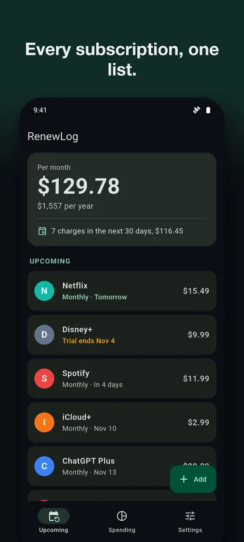
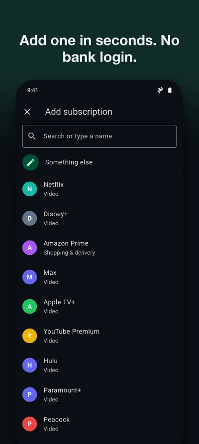
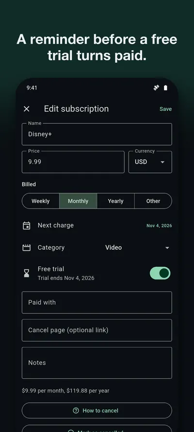
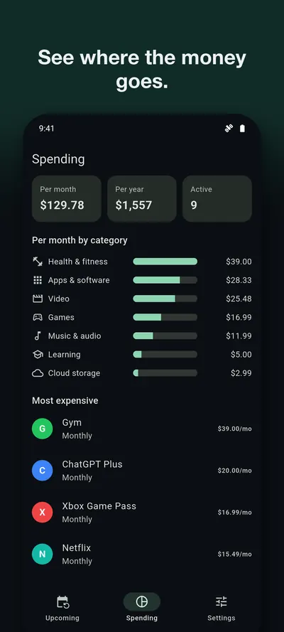
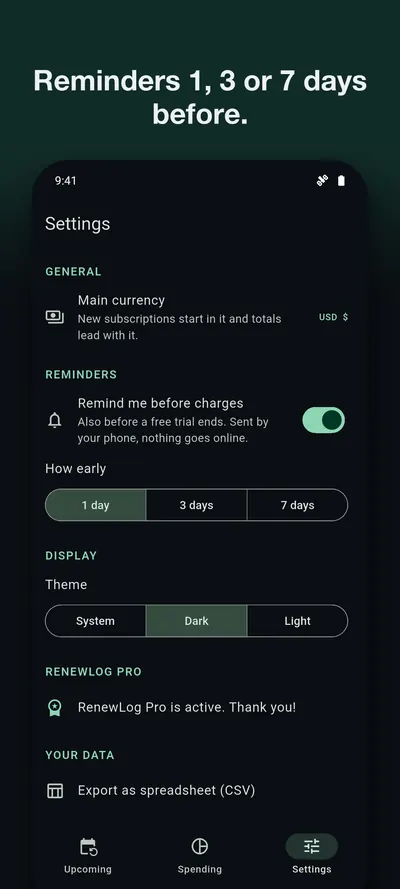
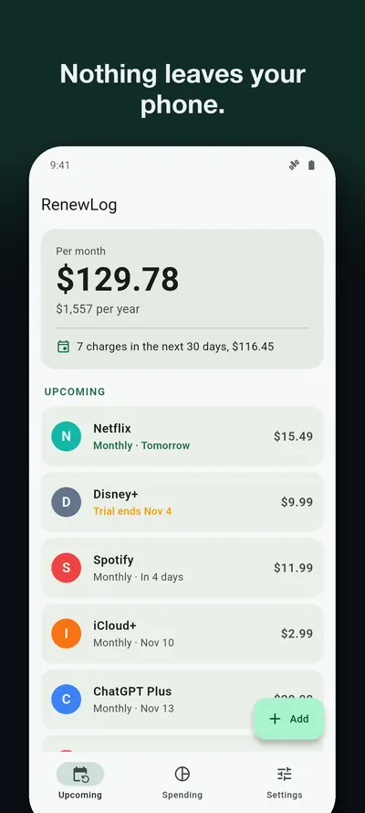

Track every subscription without connecting your bank
RenewLog keeps what you pay for in one list, adds it up per month and per year, and warns you before each charge and before a free trial turns paid. You type the entries yourself. There is no bank login, no account, and your list stays on your phone.
Get it on Google PlayAndroid. Free for up to 5 subscriptions with reminders. RenewLog Pro, one in-app purchase paid once, adds unlimited subscriptions, spending by category, CSV export, backup and restore.






What it does
One list, soonest first
Weekly, monthly, yearly or any custom cycle, in any currency. About 55 common services are ready to pick, or type your own. Dates roll forward after each charge, even on the 31st.Real totals
What you pay per month and per year, and what is due in the next 30 days. A weekly charge counts as a weekly charge, so the total does not flatter you.Reminders from your phone
A notification at 9:00, one, three or seven days before each charge, as you choose. Your phone creates it, so nothing goes through a server.Free trial warnings
Enter the day a trial ends and get a separate warning before it turns paid.Where it helps
- You signed up for a trial and worry you will forget. Add it with the end date. How to avoid the charge.
- A yearly renewal keeps surprising you. A list sorted by date shows it coming a month ahead.
- You do not want to hand a budgeting app your bank login. How to track subscriptions by hand, and what you give up.
- You want to know the total. Weekly, monthly and yearly charges are hard to add up in your head.
What it will not do
RenewLog cannot see your charges, so it finds nothing by itself and you add each subscription by hand. It cannot cancel anything for you. Its "How to cancel" button opens the right store page or the cancel link you saved, and the rest is up to you. If you want automatic detection from your bank, this is not that app.
Support
Questions, bugs, or feature requests: email contact@eastframe-technology.com. A human reads every message, usually the same day.
A 2-minute captioned walkthrough shows every feature. It was filmed on an iPhone; the Android app has the same screens.
Frequently asked
Can RenewLog cancel a subscription for me?
No, and no app can do that honestly without your passwords. RenewLog shows you what renews and when, and its "How to cancel" button opens the Google Play or App Store subscriptions page, or the cancel link you saved for that service.
Why don't you connect to my bank?
So your bank details and your list stay out of anyone else's hands. Adding a subscription takes a few seconds with the built-in list of common services.
Will it find my subscriptions by itself?
No. You enter them, because it reads nothing from your bank, email or phone. This guide shows where to look.
I didn't get a reminder.
Check that notifications for RenewLog are allowed in your phone's settings and that "Remind me before charges" is on in RenewLog. Reminders fire at 9:00, one, three or seven days before the charge, as you choose.
My subscriptions are in different currencies.
Each one keeps its own currency. Totals are shown per currency, led by the main currency you pick in Settings. Nothing is converted.
What is free, and what does Pro add?
Free: up to 5 subscriptions with totals, reminders and trial alerts. RenewLog Pro, a single in-app purchase: unlimited subscriptions, spending by category, CSV export, backup and restore.
Is there a subscription?
No. RenewLog Pro is a single purchase. Restore it on a new phone from Settings, and move your list with Back up and Restore.
Guides
- How to track subscriptions without connecting your bank
- How to avoid being charged after a free trial
- How to find what you are subscribed to on Google Play and the App Store
Privacy policy
Effective 6 November 2026. RenewLog is published by Eastframe Technology LLC.
What we collect: nothing. RenewLog has no account system, no analytics, no advertising, and no crash reporting service. It sends no data to us or anyone else, and it works without an internet connection.
Your subscriptions (names, prices, dates, notes and any links you enter) are stored in a local database on your device until you delete them or uninstall the app. If you export a spreadsheet or a backup, the file goes to the app or service you choose in the share sheet.
Reminders are scheduled on your device. Nothing is sent to a server to deliver them.
Purchases are handled by the App Store or Google Play. We do not see your payment details. On Android, the app includes Google Play's billing library, which has the internet permission and connects to Google Play to handle purchases. Google's privacy policy applies to that connection.
Third parties. The app contains no third-party advertising or analytics code. The only external pages it opens are this page, the store's subscription pages and the cancel links you saved, and only when you tap them.
Children. RenewLog is not directed at children and collects no personal information from anyone.
Changes. A new version of this policy will be published at this address with a new effective date.